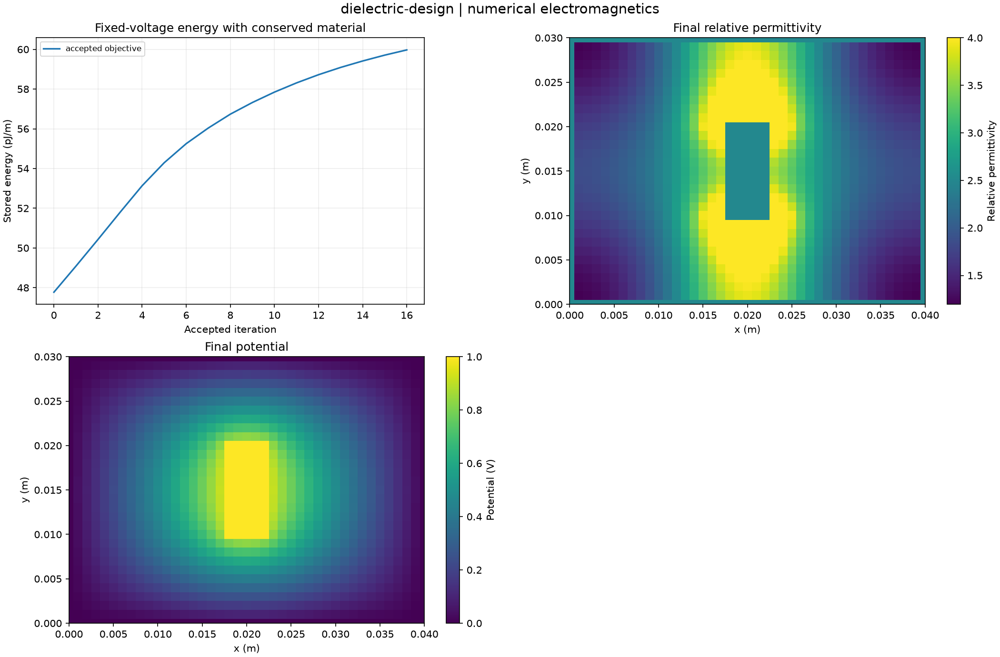

Reproducible numerical electromagnetics. Units and field components are printed on the scientific axes. Peak phasors use exp(+i omega t); outgoing waves use exp(-i k r).
Sealed numeric archive | Summary CSV | Physical parameters | Run request | Source and environment

| accepted_iterations | 16 |
|---|---|
| capacitance_gain_fraction | 0.25531708173440304 |
| final_capacitance_f_m | 1.1994170921264384e-10 |
| initial_capacitance_f_m | 9.554694264729269e-11 |
| material_mean_defect | 4.440892098500626e-16 |
These are simulations, not hardware measurements. Mesh, boundary, truncation and statistical uncertainty require distinct convergence checks. Singular or unilluminated data use explicit masks.
Source revision: 255b9ec965941d1fc97a04b9f7e2101e959fbeca.
Dirty checkout: False.
Configuration SHA-256: 63d5954959398838abebc550baf77ed28ac869f9134e82f0d92d459927e5985d.
Replay preserves original source and parameter provenance. SHA-256 manifests detect changed bytes; they are unsigned integrity records, not certificates of physical validity.